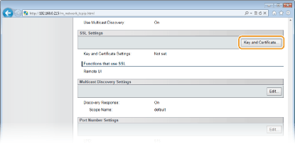
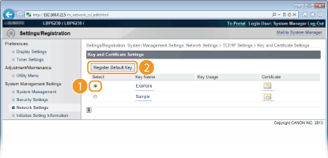
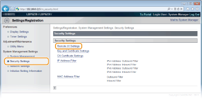
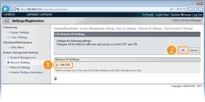

0KU8-030
Os usuários autorizados podem sofrer perdas não antecipadas decorrentes de ataques por terceiros mal-intencionados, como detecção, falsificação e violação de dados conforme eles fluem através de uma rede. Para proteger seus dados valiosos, você pode codificar a comunicação do Remote UI entre a impressora e um navegador da Web no computador usando o Secure Sockets Layer (SSL). O SSL é um mecanismo de codificação de dados enviados ou recebidos através da rede. O SSL deve estar ativado quando o Remote UI é usada para fazer as configurações para o SNMPv3. Para usar o SSL para o Remote UI, você precisa definir um par de chaves e ativar a função SSL. Tenha em mãos um par de chaves para usar (Configurando as definições para pares de chave e certificados digitais).

|
|
|
Quando você utiliza o SSL para codificar a comunicação com o Remote UI, defina os dados de hora da impressora. Você pode usar os seguintes métodos para definir os dados de hora.
Use um servidor de horário de rede para ajudar o relógio de sistema da impressora Configurando o SNTP
Notifique a impressora do horário atualmente definido em seu computador Sincronizando com o horário definido no computador
|
1
Inicie o Remote UI e faça o logon no modo Administrador Sistema. Iniciando o Remote UI
2
Clique em [Settings/Registration].

3
Clique em [Network Settings]  [TCP/IP Settings].
[TCP/IP Settings].

4
Clique em [Key and Certificate] em [SSL Settings].

5
Selecione a chave a ser usada na lista de chaves e certificados e clique [Register Default Key].


Como visualizar os detalhes de um par de chaves ou certificado
Você pode conferir detalhes do certificado ou verificar o certificado clicando no link de texto correspondente sob [Key Name], ou no ícone do certificado. Verificando os pares de chaves e certificados de autoridades certificadoras
6
Ative o SSL.
|
1
|
Clique em [Security Settings]
 |
|
2
|
Clique em [Edit].
 |
|
3
|
Marque a caixa de seleção [Use SSL] e clique [OK].
 [Use SSL]
Marque a caixa de seleção para usar o SSL na comunicação com o Remote UI. Desmarque a caixa de seleção se não quiser usar o SSL.
|
7
Reinicie a impressora.
Desligue a impressora, espere pelo menos 10 segundos e ligue novamente.
 |
|
Inicializando o Remote UI com o SSL ativado.
Se você iniciar o Remote UI quando o SSL está ativado, um alerta de segurança sobre o certificado de segurança pode ser exibido. Neste caso, verifique se a URL correta foi digitada no campo de endereço e, em seguida, prossiga para exibir o Remote UI. Iniciando o Remote UI
|